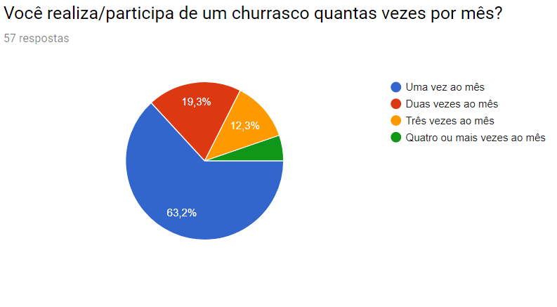
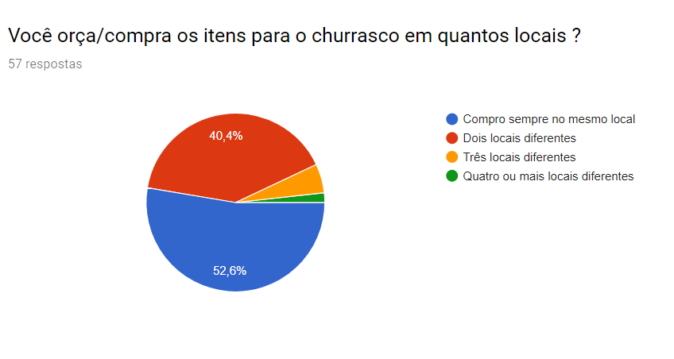

O que sera que os amantes da carne fazem para elaborar um churrasco?
De acordo com nossa pesquisa as pessoas tendem a partcipar de um churrasco ao menos uma vez ao mes, esse valor corresponde a mais das metade das nossas respostas, o que nos diz que seja maior ou menor essa frequencia de churrascos realizados , todos amam se reunir com os amigos e assar uma carninha, mas alguns mais que outros...
Quando vao reunir para comprar os componentes para a realizacao do churrasco os entrevistados priorizam 2 coisas, carne e bebida alcoolica. Apesar de termos colocado a opcao de bebida nao alcolica nenhum dos entrevistados optou por essa opcao. Como acompanhamento preferido o ganhador foi o pao de alho,sendo seguido pelo vinagrete e a farofa. Tendo isso em mente em seguida foi perguntado em quantos locais sao orcados os itens e a maioria optou por um local. Assim sendo conseguiremos definir personas para cada tipo de comprador e formar "packs" de churrasco contendo diversos itens, ocasionando atratividade para o cliente,gerando um custo de oportunidade, e sendo mais custo beneficio e acarretando lucro para o fornecedor, pois se antes ele iria vender apenas a carne agora ira originar uma facilidade maior para ele vender a carne, bebida e algum acompanhamento para um cliente aumentado a rotatividade do estoque.
